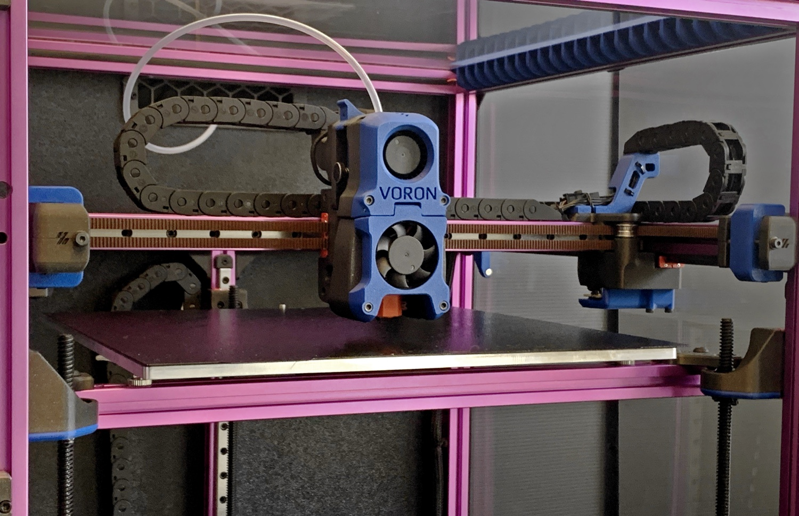
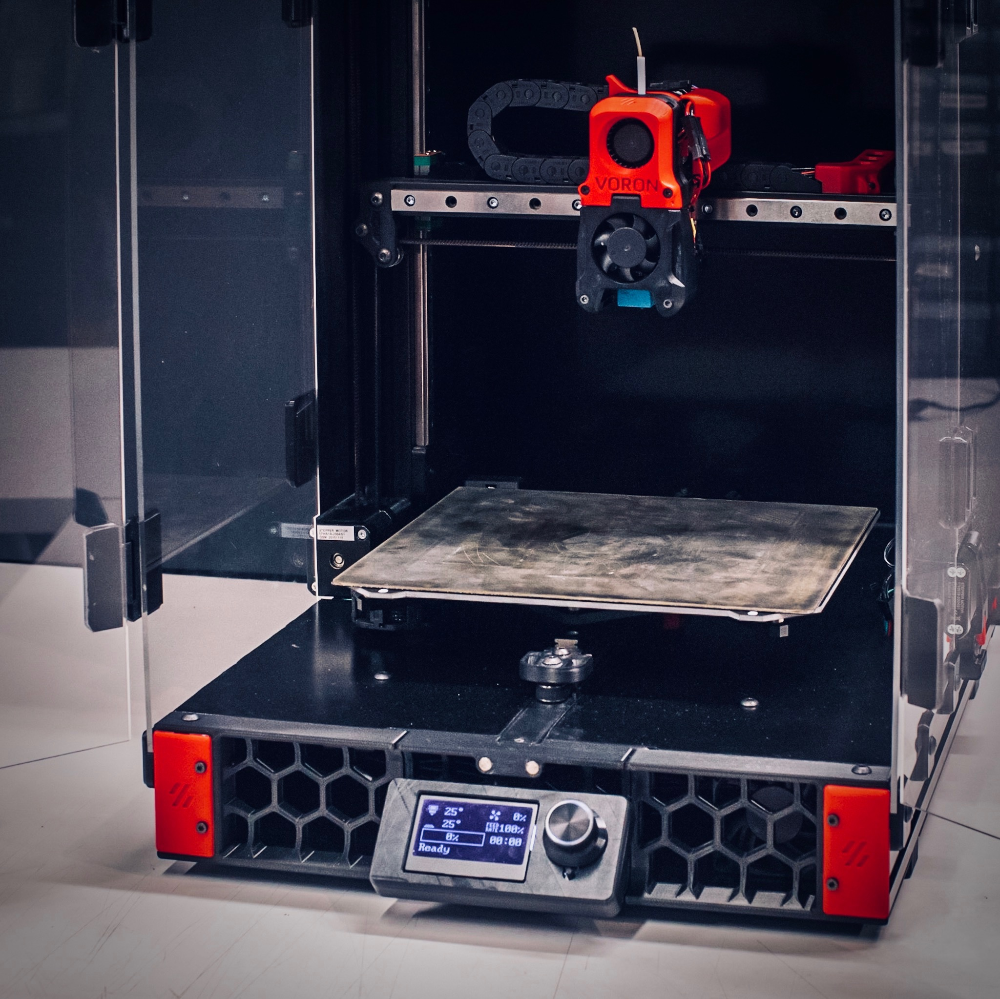
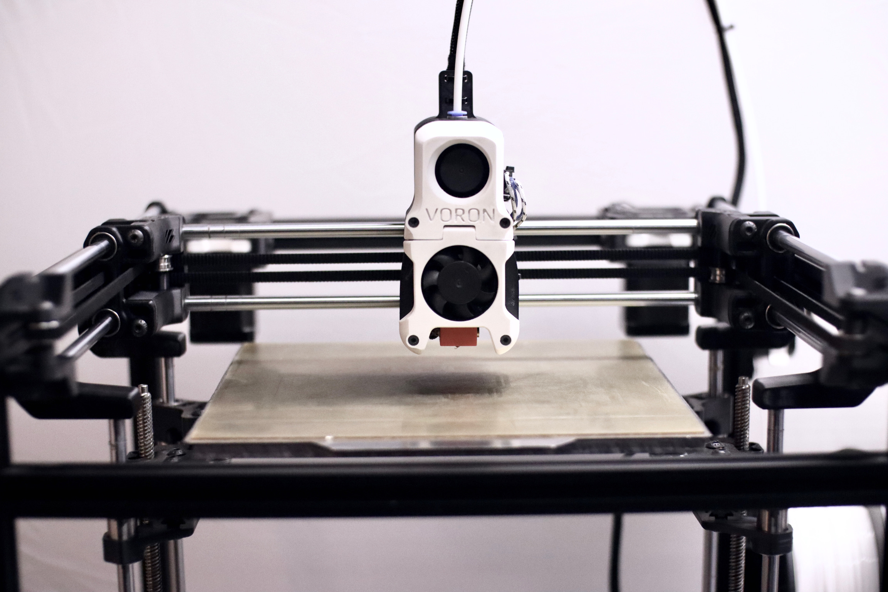
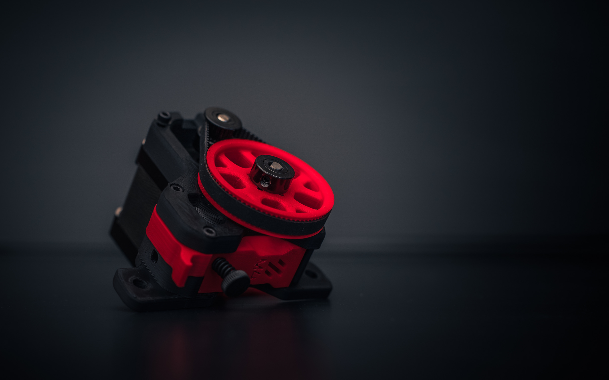
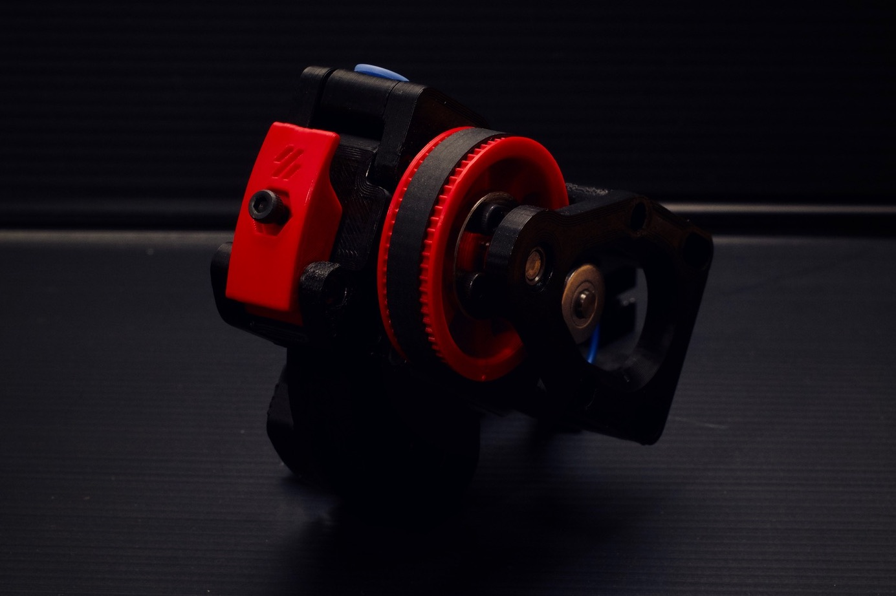

This is a guide to help people in selecting and building their first Voron printer and/or extruder.
There are currently 5 printers in the Voron lineup. One is not necessarily better than the other, just different. All printers (except Legacy) are capable of being fully enclosed to print ABS but can just as easily print PLA, PETG, or even Nylon. All printers in the Voron lineup are designed to use a Raspberry Pi linked to one or more motor controller board(s) to manage all of the printer functions and interface controls.
Note: Pricing estimates are in US Dollars and do not include any necessary tools or other common building supplies. Costs vary widely depending on sourcing, part selection, and shipping costs.
The Voron Zero is a traditional CoreXY design with the bed moving along the Z axis. It has a tiny 120mm^3 print area, built with 1515 extrusions. It encloses naturally so printing ABS is possible. Currently, all single mechanical parts for Trident and V2 can be printed on a Voron Zero bed. The design accounts for stock Makerbeam XL extrusion lengths (which come tapped) and standard MGN7 linear rail lengths, so scaling the design will start to increase cost or labor involved with tapping. The bed is also cantilevered which will also restrict scaling. This printer can be built for between $400 - $600. Current release is V0.1.
The Voron Trident is a traditional CoreXY design with a fixed gantry and the 3-point bed moves along the Z axis. It is simpler to build compared to V2 and can be built for between $1,000 - $1,300. It encloses naturally so ABS or other temperature sensitive filaments can be printed easily. It uses linear rails for all axes, driven by belts on the X and Y axes and stepper motors with integrated leadscrews on the Z axis. Standard sizes include a 250x250mm plate, a 300x300mm plate, or a 350x350mm plate. Z height is somewhat restrictive due to the limited options with integrated lead screw steppers, maxing out at 250mm without custom leadscrew motors.

The Voron V2 is a modified CoreXY design with a static bed and a gantry that moves along the Z axis. It is a much more complex build because it includes things such as 4-point gantry tramming to align to the print surface, dual MCUs, and other unique features. It is also designed to be fully enclosed so it prints ABS or similar filaments very well. Due to the linear rails the design is scalable in stock form from 250mm^3 and 300mm^3 all the way up to 350mm^3. More linear rails, larger print surface, and other V2-specific items make this printer more expensive, at between $1,500 - $1,900. Current release is V2.4r1.

The Switchwire is a Voron take on a classic Mendel (aka “bedflinger”) design. It is a CoreXZ design so the print head is belt driven in both the X and Z axis eliminating the typical leadscrew Z drive allowing for very fast Z movement speeds and less weight on the gantry by moving the X motor to the frame. The stiff 3030/3060 contructed frame is just large enough to cover the entire swing of the Prusa 250x210mm bed and allows for a natural enclosure. Without having an existing Prusa printer to pull parts from, cost is between $700 - $900

The Legacy is a tribute to the roots of the Voron project and the RepRap project. It returns to the classic design using LM8UU rods and bearings in the 230mm^3 size but retains the new Afterburner toolhead. It is not designed to be enclosed. The electronics enclosure is very small, adding to the open-air vibe. Costs are variable depending on the builder’s old stock of LM8UU components but are expected to be between $600 - $800.

Mobius is the original Bowden extruder for Voron printers, designed to be mounted on the frame. Highly optimized, dual gear, and very effective for Bowden setups. Driven by a full-size or a compact “pancake” NEMA17 motor.

Jetpack is a modified Mobius designed to be mounted on the X axis for a shorter Bowden. Was designed as an intermediary solution to reduce the Bowden tube lengths before the introduction of Afterburner and has been superceded by the M4. It is driven by a compact “pancake” NEMA17 motor.

Afterburner is not specifically an extruder, but the collective name for the Voron direct-drive interchangeable toolhead system. The Afterburner system has three interchangeable components: the extruder, the toolhead holding the hot end, and the cooling assembly. Each of those can be swapped without affecting the other components.
Afterburner Announcement Video

Mini Afterburner refers to the V0.1 toolhead with a built-in direct-drive extruder based on the Pocketwatch from the original Voron Zero.
Clockwork is the name given to the original extruder system for Afterburner. It is a repackaged BMG dual-gear extruder driven by a compact “pancake” NEMA17 motor. The Afterburner term is commonly (but incorrectly) used to refer to this extruder.
Pocketwatch is the Afterburner Clockwork repackaged for the smaller size needed by the Voron Zero printer. Pocketwatch is available as a standalone extruder for Bowden setups.
Galileo is the newest extruder designed to fit on an Afterburner toolhead. It is based on the Orbiter extruder and incorporates a planetary gear reduction to allow a smaller housing size and even smaller motor to be used in order to reduce weight.
Note: While not a Voron product, the Bondtech LGX is a drop-in fit on the Afterburner system.